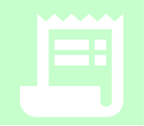

-
Cadastrar donatário
Cadasto de pessoas carentes as quais necessitam de roupas. -
Criar campanha
Cadastramento de campanhas com o objetivo de arrecadar itens requisitados. -
Controle de estoque
Cadastramento dos itens recebidos através das doações. -

Emitir relatório
Emissão de relatórios dos itens requisitados e de pessoas que necessitem de doação.